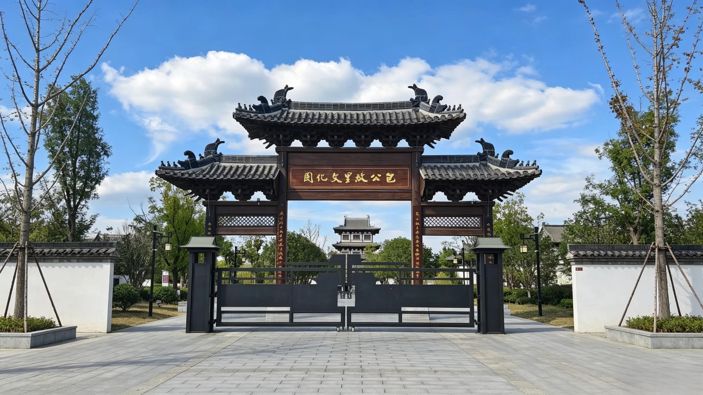

景区概览
从建设背景、空间布局、文化主题与游览路线认识包公故里文化园。
ABOUT THE PARK
认识包公故里文化园
包公故里文化园坐落于安徽省合肥市肥东县包公镇。这里是北宋名臣包拯的故里，园区依托地方历史遗存和包公文化资源建设，于2023年3月正式开园，并于2025年获评国家AAAA级旅游景区。
核心园区约5.1万平方米，以仿宋民居建筑风格为主。包公故居、孝肃阁、包公书院、廉苑和包林构成主要文化空间，花园井、包氏宗祠、荷花塘、戏台、亭廊等景观将建筑、园林和历史叙事连接起来。
园区并不只讲“断案传奇”，而是从家庭成长、奉亲孝道、求学应试、地方治理、监察财政、廉洁家风以及后世艺术传播等角度，展示更完整的历史包拯和包公文化。

PARK FACTS
景区信息速览
2023文化园正式开园
2025获评国家AAAA级旅游景区
约5.1万㎡核心园区规模
孝廉智正忠核心文化主题
PARK LAYOUT
官方导览图
点击图片可放大查看景点分布、参观方向与推荐游线。

FEATURES
景区特色
仿宋建筑与院落空间
青砖灰瓦、木构门窗、院落中轴与亭廊水景共同营造古朴的宋韵氛围，并为人物故事提供空间载体。
人物生平与家风叙事
从出生、读书、应试、奉亲到入仕为官，展陈既表现包拯个人经历，也关注家庭教育和地方文化。
廉政文化与当代教育
以奏议、家训、历史事迹和廉政人物为线索，形成面向普通游客、研学团队和主题教育的文化内容。

SUGGESTED ROUTE
推荐参观路线
根据景区导览图，可沿主要文化节点依次参观：
莲花广场→
花园井→
包公故居→
宜道堂→
孝肃阁→
包公书院→
戏台
实际开放区域与参观动线请服从景区现场引导。